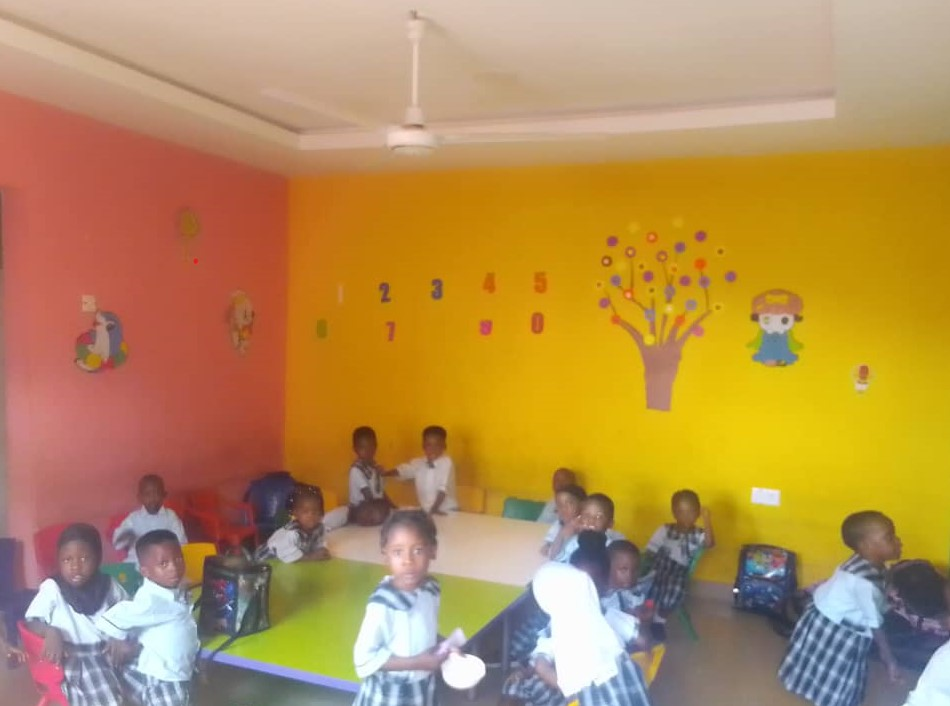

Our Nursery Section
At Kazlam International School,

Our nursery is where it all begins.
It’s a warm, welcoming space designed to make young children feel safe, happy, and
eager to
explore. At this stage, learning happens through play, stories, songs, movement, and imagination.
Every activity is carefully planned to support emotional, social, and cognitive growth.
We focus on
building trust, encouraging curiosity, and developing basic communication and motor skills.
Our caregivers are not just teachers—they’re guides, nurturers, and role models.
We believe in letting
children be children, while gently laying the groundwork for a smooth transition into formal schooling.
In short, the nursery section is not just a place—they’re the first steps
of a much bigger journey,
and we make sure every step counts.
Philosophy of the Nursery Section
"We were Impressed by the nursery's attention to detail and commitment to safty. The staff are knowledgeable
and experienced, providing a stable and supportive environment. our child has grown and develop so much
since starting here".
peculiar's family.
"Our child has thrive in this nurturing environment. The staff are dedicated and passionate about providing
quality care. We appreciate the regular updates and progress report they share with us".
Joe' family.
"The resources and guidance offered were top-notch. My daughter's academic preformance improved significantly
and she's now excelling in her favorite subjects."
Miracle's family.
KAZLAM.
Our goal is simple: to Build A Standard Foundation, to give every
child a happy, secure start that sets the tone for
a lifelong journey of growth.
Do you have a
question, an idea
Built by me with 🍔&🍾
© 2025 Joe Joe/Jet club kis.